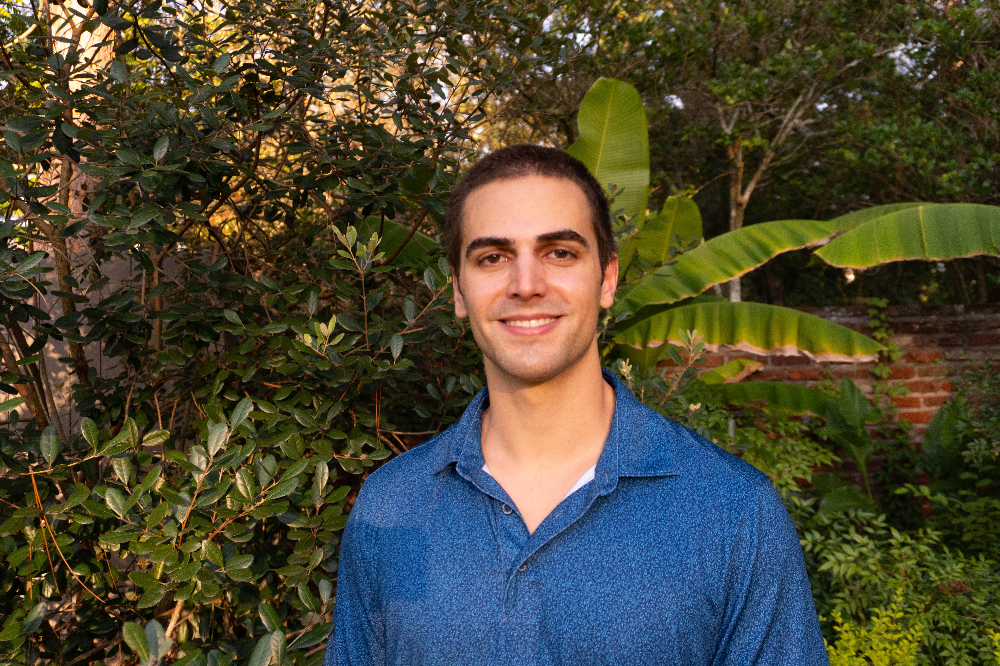
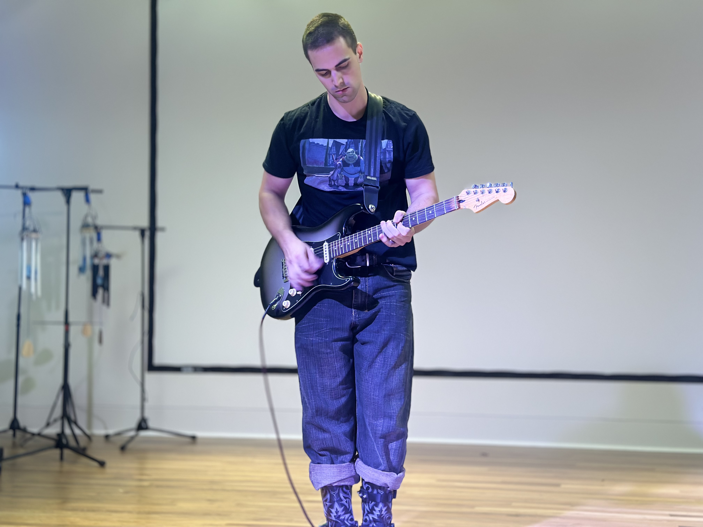

I am a recent graduate of Stanford University who specializes in software development.
I graduated on June 16th, 2024, with a cumulative GPA of 3.81 in
Symbolic Systems.
People often ask me, "What on earth is Symbolic Systems?" and I typically
like to explain using examples of my coursework.
I took many Computer Science classes, for example:
Data Structures & Algorithms, Computer Systems, and Probability and Statistics for
Computer Scientists.
However, I also took classes such as Human Behavioral Biology,
Linguistics, and The Philosophy of Mind. This education has provided me with a
more complete understanding of computation, human thought, and human-computer interaction,
and I am confident it has prepared me for a career in software development.
Outside of Stanford, I worked as an intern at Dolby Laboratories on their
FlexConnect
team.
Initially, this was a three month program, but my internship was extended for an additional
three months. I primarily worked as an intermediary between the research and engineering teams.
This required me to collaborate with the resarchers to understand the theory behind new features,
implement these features in C for FlexConnect's new API, and
develop unit tests in C++. I also leveraged Git and Gitlab to help our
QA team with our project's version control and cloud-based testing.